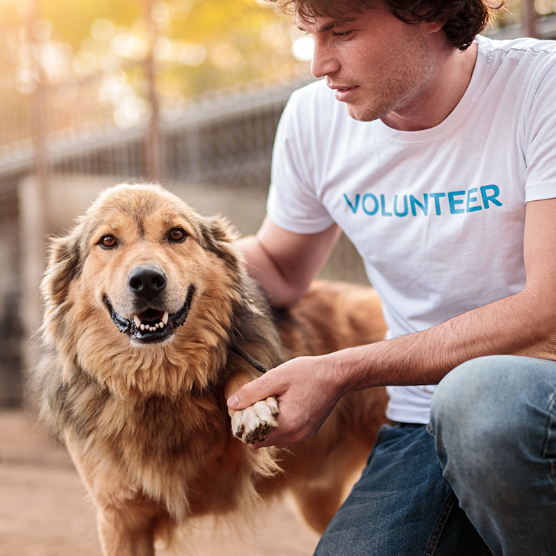

Twin Cities Animal Rescue
A little love.
A whole new life.
Every animal deserves a safe place to land. Help us connect pets with people who will love them for a lifetime.
Adopt a friend. Become a foster. Make a difference.

Our Mission
Our mission is to connect animals in need with compassionate people through adoption, fostering, volunteering, and community support.
Our Impact
Together, our community creates second chances. These fictional figures represent our 2025 classroom project impact.
- Animals placed in homes in 2025: 240
- Active foster homes at the end of 2025: 65
- Volunteer hours contributed in 2025: 4,800
Find your way to help
How You Can Help
A home, a helping hand, a little time.
It all makes
a difference.

Give a little of your time
Help animals feel safe, cared for, and ready for what’s next.
Discover volunteering
Support as a donor or community partner
Ask about supply needs, financial support, or collaboration opportunities that help animals and the people who care for them.
Ask about supporting the rescue